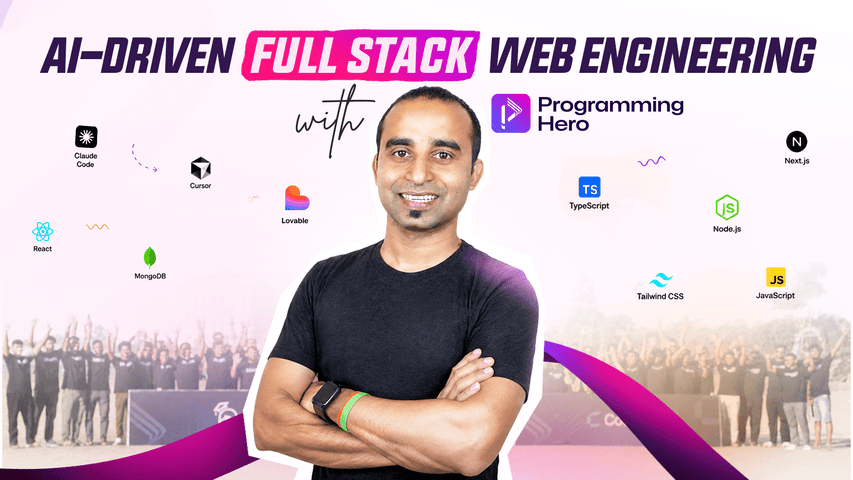

Course Overview

An AI-Driven Web Development Course teaches developers and designers how to pair traditional coding with artificial intelligence to build modern web applications. The program focuses on optimizing the engineering workflow, showing students how to leverage advanced AI coding assistants and modern IDEs to automate boilerplate generation, speed up debugging, and prototype responsive user interfaces rapidly.
Beyond workflow efficiency, the curriculum guides students through constructing full-stack, intelligent features from scratch. Learners get hands-on experience integrating Large Language Model APIs directly into frameworks like React or Vue, allowing them to deploy functional AI chatbots, dynamic content engines, and predictive analytics dashboards. It is tailored for tech professionals looking to future-proof their skill sets and launch intelligent web products at scale.
What You Will Learn
In this course, you will master the art of pairing traditional coding with artificial intelligence to build smarter web applications much faster. You will learn how to use AI-driven development tools like GitHub Copilot and Cursor to automate repetitive coding tasks, generate clean boilerplate, and instantly debug complex code errors. Beyond workflow optimization, you will gain hands-on experience integrating Large Language Model (LLM) APIs directly into popular front-end frameworks to build and deploy intelligent features—such as real-time AI chatbots, semantic search engines, and dynamic user interfaces. By the end of the program, you will know how to responsibly design, test, and scale full-stack web applications that leverage the power of modern AI.
Learning Topics:
- HTML
- Semantic HTML
- Forms
- CSS
- Responsive Design
- Javascript
- DOM
- Git
- APIs
- Deployment
Course Curriculum
The curriculum bridges the gap between traditional software engineering and modern artificial intelligence, taking students from foundational workflow automation to full-stack AI implementation. Early modules focus on mastering developer-centric prompt engineering and configuring AI code assistants inside local development environments to accelerate boilerplate setup and debugging. As the course progresses, the focus shifts to architecture and integration, where students build responsive front-end interfaces and connect them to Large Language Model APIs to power intelligent features. The final weeks culminate in production-ready deployment, covering essential engineering practices like managing API latencies, securing API keys, token cost optimization, and designing user experiences that handle AI hallucinations gracefully.
Modules:
- HTML Basic
- Lists & Links
- Images & Media
- Forms
- CSS Fundamentals
- Flexbox
- JavaScript Basics
- Final Project
Meet the Instructor
As an active full-stack software engineer and AI integration specialist, I have spent the last several years building intelligent web applications and helping development teams transition away from purely manual, repetitive coding. My industry experience ranges from architecting robust front-end interfaces to deploying machine learning models in production environments. I designed this course because the web development landscape has shifted permanently; the developers who thrive today are not just writing code—they are orchestrating AI tools to code faster, smarter, and with fewer bottlenecks.
In this course, my goal is to strip away the academic jargon and give you a purely practical, engineering-first education. I will be guiding you step-by-step through the same workflows, prompting frameworks, and API integrations that I use daily to launch scalable, real-world products. Whether we are debugging a complex React component using an AI assistant or configuring secure backend pipelines for an LLM, I am committed to helping you future-proof your skill set and build the confidence to lead AI-driven projects in any modern tech environment.
Student Reviews
Students consistently praise the course for its immediate, practical impact on their daily coding workflows, frequently highlighting how mastering AI code assistants cut their development time in half. Many reviews from front-end developers and UI/UX designers note that the step-by-step API integration projects demystified complex LLM architectures, giving them the confidence to build and deploy functional AI features from scratch. Beginners and seasoned engineers alike appreciate the clear, fluff-free instruction, stating that the curriculum does an exceptional job of bridging the gap between traditional coding and modern artificial intelligence without getting bogged down in overly dense academic theory.
Student Reviews:
-
Sarah T., Front-End Developer
"This course completely transformed my workflow—learning how to properly prompt AI assistants cut my debugging and boilerplate setup time in half. The hands-on React and API integration projects gave me the exact skills I needed to build my first intelligent app."
-
Alex M., Full-Stack Engineer
"I was skeptical at first, but the curriculum moves past basic chat prompts and dives deep into practical architecture and token optimization. It's an essential guide for any developer looking to future-proof their career and build scalable, production-ready AI features."
-
Elena R., UI/UX Designer
"As a designer with limited coding experience, this course was a game-changer because it taught me how to use AI to rapidly prototype my ideas into functional web layouts. The instructor breaks down complex LLM concepts so clearly that anyone can follow along."
-
David K., Tech Entrepreneur
"The modules on connecting front-end frameworks to AI APIs allowed me to launch my MVP in a fraction of the time it would have normally taken. I highly recommend this to anyone looking to build and deploy smart web products quickly."
-
Marcus L., Computer Science Student
"They don't teach this modern workflow in university, and learning how to pair traditional coding with tools like Cursor has made me a much faster developer. The sections on managing API latencies and security were incredibly valuable for my personal projects."
Course Introduction Media
The course introduction media serves as a dynamic visual gateway that immediately immerses students in the fast-paced world of AI-assisted engineering. Featuring a high-quality, professionally produced video trailer, it provides a compelling sneak peek into the exact projects you will build, showcasing real-time screen captures of AI tools like Cursor generating complex React components and functional chatbots coming to life on screen. Beyond just outlining the syllabus, this engaging introductory footage establishes the practical, hands-on tone of the program, assuring learners that they are stepping into a polished, modern educational experience designed to immediately upgrade their technical workflow.